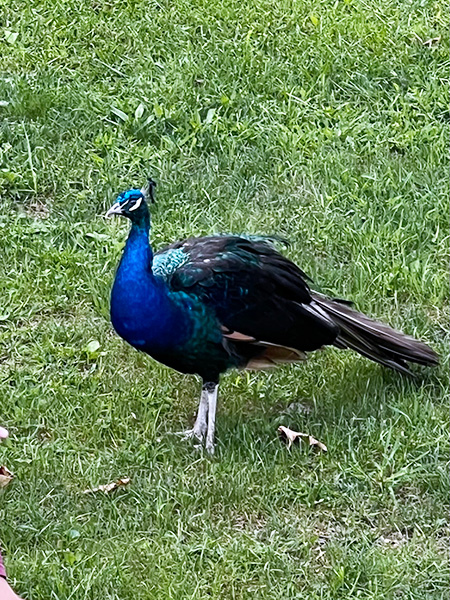

Ashlynn Winsett
There are so many animals in the world. More than likely, you haven't seen or heard of even half of what is out there. For starters, we'll talk about three; cows, longhorns, and dholes. Cows are very common. If you go on any kind of road-trip, you'll be sure to see at least one. Longhorns aren't as common as cows but can still be found on some farms. Dholes, however, are more exotic and can be found in some zoos.
